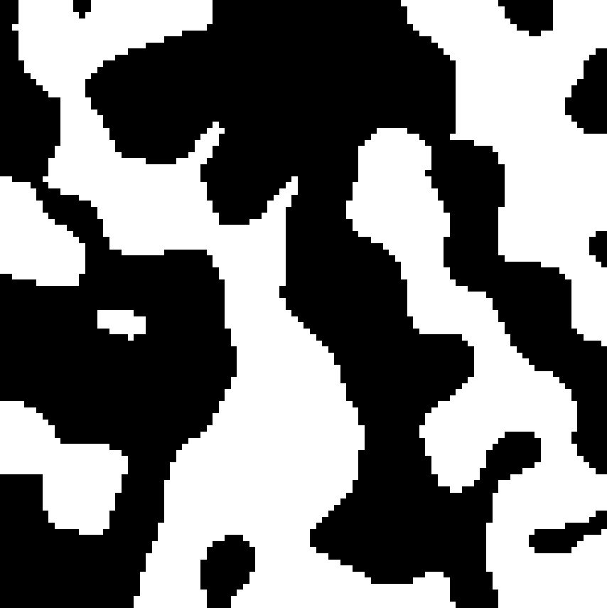
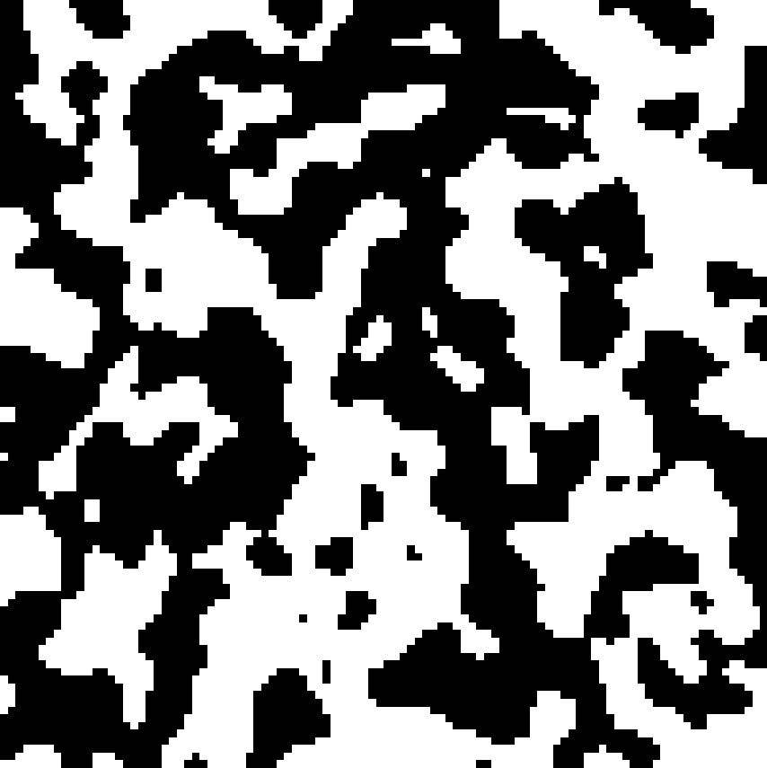

9 Dynamics of first order phase transitions: nucleation, growth and spinodal decomposition
9.1 Introduction to nucleation
In previous discussions, we considered first-order phase transitions but deferred a detailed analysis of the dynamical mechanism by which a system evolves from one phase to another. We now address this question explicitly.
Consider again the Ising model at a temperature \(T < T_c\), where the system is initially prepared in the majority spin-up phase at zero external field, \(H = 0\). We now examine the system’s response to the application of a small negative external field \(H < 0\), which lowers the free energy of the spin-down phase relative to the spin-up phase.
Despite the global free energy favoring the spin-down phase, the system does not undergo an instantaneous transition. This delay is a consequence of the free energy barrier associated with nucleating a region of the stable phase within the metastable one, as introduced in Chapter 5. The dynamical pathway of the phase transition proceeds via nucleation of localized regions—referred to as droplets—of the stable (spin-down) phase embedded within the metastable (spin-up) background. Once nucleated, these droplets may grow over time and ultimately coalesce to transform the system to the stable phase.
The nucleation of a droplet of the stable phase of size \(n\) spins entails a competition between bulk and interfacial contributions to the free energy. The bulk free energy gain is linear in \(n\), given by \(-nH\), due to the alignment of spins with the external field. However, this gain is offset by an interfacial free energy cost arising from broken bonds at the boundary between phases. For the Ising model, each broken bond contributes an energy cost of \(+2J\), so the total interfacial energy scales with the perimeter (in 2D) or surface area (in 3D) of the droplet. This interfacial contribution is referred to as the surface tension, and constitutes a true free energy cost: it includes not only the energetic penalty from broken bonds but also an entropic contribution due to the configurational degrees of freedom associated with the droplet shape.
The resulting competition between the extensive free energy gain and the sub-extensive interfacial cost leads to a free energy barrier for droplet formation. Only fluctuations that produce a droplet larger than a critical size \(n_c\) will grow; smaller droplets will shrink. This framework is formalized in classical nucleation theory, which provides a quantitative description of the nucleation rate, critical droplet size, and the associated activation energy barrier.
9.2 Classical Nucleation Theory: Homogeneous Nucleation
We now present the framework of classical nucleation theory (CNT) for the case of homogeneous nucleation, in which the nucleation of the stable phase occurs spontaneously and uniformly throughout the bulk of the metastable phase, without the aid of impurities, defects, or surfaces.
Let us consider a droplet of the stable (spin-down) phase of radius \(R\) embedded within the metastable (spin-up) background. The total change in free energy \(\Delta F(R)\) associated with forming such a droplet consists of two competing contributions:
Bulk free energy gain: The interior of the droplet consists of \(V \sim R^d\) spins aligned with the external field \(H < 0\), leading to a volume free energy change
\[ \Delta F_{\text{bulk}}(R) = -|\Delta f| \, R^d, \]
where \(|\Delta f| \propto |H|\) is the free energy density difference between the metastable and stable phases, and \(d\) is the spatial dimensionality of the system.
Interfacial free energy cost: The boundary between the two phases has a surface area scaling as \(R^{d-1}\), and incurs a free energy cost proportional to the surface tension \(\sigma\):
\[ \Delta F_{\text{surface}}(R) = \sigma \, S_d \, R^{d-1}, \]
where \(S_d\) is a geometrical factor (e.g., \(S_2 = 2\pi\) in 2D and \(S_3 = 4\pi\) in 3D).
The total free energy change is therefore given by
\[ \Delta F(R) = \sigma \, S_d \, R^{d-1} - |\Delta f| \, V_d \, R^d, \]
where \(V_d\) is another dimension-dependent constant. This expression exhibits a characteristic maximum at a critical droplet radius \(R_c\), obtained by extremizing \(\Delta F(R)\) with respect to \(R\):
\[ \frac{d \Delta F}{dR} = 0 \quad \Rightarrow \quad R_c = \frac{(d-1)\sigma S_d}{d |\Delta f| V_d}. \]
The corresponding free energy barrier for nucleation is
\[ \Delta F_c = \Delta F(R_c) = \frac{(d-1)^{d-1}}{d^d} \cdot \frac{(S_d)^d \, \sigma^d}{(|\Delta f|)^{d-1} \, (V_d)^{d-1}}. \]
This barrier must be surmounted by thermal fluctuations in order for a critical nucleus to form and grow. The nucleation rate per unit volume is given (in the Arrhenius approximation) by
\[ I \sim I_0 \exp\left( -\frac{\Delta F_c}{k_B T} \right), \]
where \(I_0\) is a prefactor determined by microscopic kinetics, and \(k_B\) is Boltzmann’s constant.
9.2.1 Interpretation and Scaling Behavior
Several key features emerge from this analysis:
- Barrier scaling: The nucleation barrier \(\Delta F_c \sim \sigma^d / |\Delta f|^{d-1}\) diverges as \(H \to 0\), reflecting the increasing stability of the metastable phase near the coexistence point.
- Critical radius: The critical droplet size \(R_c \sim \sigma / |\Delta f|\) also diverges as \(|\Delta f| \to 0\), indicating that larger fluctuations are required to initiate nucleation close to the coexistence line.
- Dimensional dependence: Both \(\Delta F_c\) and \(R_c\) exhibit strong dependence on the spatial dimension \(d\), with nucleation becoming increasingly suppressed in higher dimensions due to the dominance of interfacial cost.
In summary, homogeneous nucleation in a first-order transition is governed by a delicate balance between surface tension and bulk free energy gain. Only droplets exceeding a critical size can overcome the barrier and initiate a transition. This sets an intrinsic timescale for the dynamics of phase transformation, which can become extremely long near coexistence due to the exponentially small nucleation rate.
9.3 Domain growth
Following successful nucleation of a supercritical droplet, the system enters a regime where the global transformation is driven by the deterministic growth of domains of the stable phase. Such domain growth involves more atoms or molecules attaching to these nuclei, causing them to expand into larger structures (e.g., growing crystals or droplets).
Growth rate depends on factors like temperature, concentration, and the availability of building blocks.
The shape and structure of the final phase often depend on how growth occurs (e.g., slow growth may form perfect crystals; rapid growth may be irregular).
9.4 Spinodal decomposition
Previously we have considered a scenario in which we move our system to a statepoint just inside the coexistence region so that the original phase remains metastable. We then wait for a fluctuation that yields a critical nucleus and subsequent growth.
Now imagine that rather than positioning the system just inside the coexistence region we move immediately to a state point well inside the coexistence region (cf. Figure 9.2) such that there is no metastable minimum in the free energy. Then there is no nucleation and growth, rather the system is unstable and immediately starts to phase separate at all points in the system. This so called spinodal decomposition.
The nature of spinodal decomposition and late-time domain growth depends sensitively on whether the order parameter is conserved or not.
9.4.1 Non-Conserved Order Parameter Dynamics (Model A)
In systems with a non-conserved order parameter, such as the Ising model with single spin flip (so called Glauber) dynamics, the order parameter can relax locally without constraint. This leads to curvature-driven motion of interfaces.
The typical domain size \(L(t)\) grows algebraically with time:
\[ L(t) \sim t^{1/2}, \]
corresponding to a dynamic exponent \(z = 2\). The growth is driven by reduction of the total interfacial area—regions of high curvature (small domains) shrink and are absorbed by larger, flatter ones.
Let is aassume that domain walls move with velocity proportional to curvature: \[ v \sim \frac{1}{L} \] Then with the typical domain size being \(L(t)\) it follows that
\[ \frac{dL}{dt} \sim \frac{1}{L} \]
Integrating both sides yields the \(t^{1/2}\) domain growth law.
It turns out that the detailed evolution of the coarse-grained order parameter field \(\phi(\mathbf{r}, t)\) is governed by the Allen–Cahn equation:
\[ \frac{\partial \phi}{\partial t} = - \frac{\delta F[\phi]}{\delta \phi}, \]
where \(F[\phi]\) is a coarse-grained Ginzburg–Landau free energy functional:
\[ F[\phi] = \int d^d x \left[ \frac{1}{2} (\nabla \phi)^2 + V(\phi) \right], \]
with \(V(\phi)\) typically a double-well potential such as \(V(\phi) = \frac{1}{4}(\phi^2 - 1)^2\).
9.4.2 Conserved Order Parameter Dynamics (Model B)
For systems with a conserved order parameter, such as phase separation in binary alloys or the Ising model with spin-swap (so called ‘Kawasaki’) dynamics, the order parameter (e.g., composition or particle number) must be conserved locally. This imposes a diffusive constraint on the dynamics.
The domain size again grows algebraically, but with a different exponent:
\[ L(t) \sim t^{1/3}, \]
corresponding to a dynamic exponent \(z = 3\).
A chemical potential difference drives diffusion and is given by \[ \Delta \mu \sim \frac{\sigma}{L} \] (again due to curvature, where \(\sigma\) is surface tension)
Now the flux is proportional to the chemical potential gradient (Fick’s law): \[ \text{Flux} \sim -\nabla \mu \sim \frac{\Delta \mu}{L} \sim \frac{\sigma}{L^2} \]
and the rate of change of domain size is proportional to this flux: \[ \frac{dL}{dt} \sim \frac{1}{L^2} \quad\Rightarrow\quad L(t) \sim t^{1/3} \]
It turns out that the detailed dynamics are described by the Cahn–Hilliard equation, a continuity equation of the form:
\[ \frac{\partial \phi}{\partial t} = \nabla^2 \left( \frac{\delta F[\phi]}{\delta \phi} \right), \]
reflecting that the order parameter can only evolve via diffusion of its conjugate chemical potential. This leads to the slow transport of material across domains and a more sluggish coarsening process compared to the non-conserved case.
9.4.3 Schematic of Domain Growth in 2D Ising model
Here are schematic illustrations of domain growth for:
Non-conserved dynamics (Model A): Domains coarsen rapidly, with smoother and larger regions due to free relaxation of the order parameter.
Conserved dynamics (Model B): Coarsening is slower and domains are more intricate, reflecting the constraint of local conservation.


9.4.4 Dynamics Scaling Hypothesis
At late times, both conserved and non-conserved systems exhibit dynamic scaling: the statistical properties of the domain morphology become self-similar under rescaling of lengths by \(L(t)\).
For example, the equal-time two-point correlation function satisfies
\[ C(r, t) = f\left(\frac{r}{L(t)}\right), \]
where \(f(x)\) is a time-independent scaling function. Plots of \(C(r, t)\) collapse when plotted as a function of \(r/L(t)\).
The structure factor \(S(k, t)\), which is the Fourier transform of the correlation function, is experimentally accessible eg via X-ray or neutron scattering, and also obeys dynamic scaling:
\[ S(k, t) = \int d^d r \, e^{-i \vec{k} \cdot \vec{r}} \, C(r, t). \]
Substituting the scaling form of \(C(r, t)\) into this expression, and changing variables to \(\vec{u} = \vec{r}/L(t)\), gives:
\[ S(k, t) = L(t)^d \int d^d u \, e^{-i \vec{k} \cdot L(t) \vec{u}} \, f(u) = L(t)^d \, g(kL(t)), \]
with \(g(x)\) a universal scaling function dependent on the dynamical class and dimensionality.
9.4.5 Summary of Growth Laws
| Dynamics Type | Conservation | Equation Type | Growth Law | Dynamic Exponent |
|---|---|---|---|---|
| Model A (e.g. Glauber) | No | Allen–Cahn | \(L(t) \sim t^{1/2}\) | \(z = 2\) |
| Model B (e.g. Kawasaki) | Yes | Cahn–Hilliard | \(L(t) \sim t^{1/3}\) | \(z = 3\) |
Remarks: The domain growth exponents \(1/z\) are robust under many conditions, but can be modified in the presence of disorder, long-range interactions, or hydrodynamic effects.
In both the model A and model B cases, the system coarsens until it reaches equilibrium, characterized by a uniform macroscopic phase and the complete elimination of interfaces.
The approach to equilibrium is algebraically slow (described by power laws) due to the scale-free nature of domain dynamics.